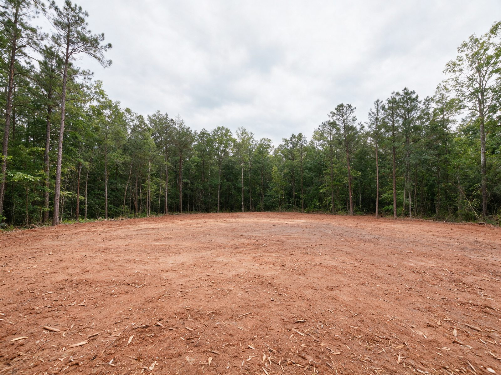
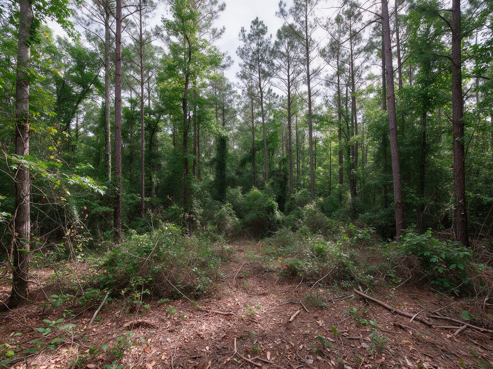
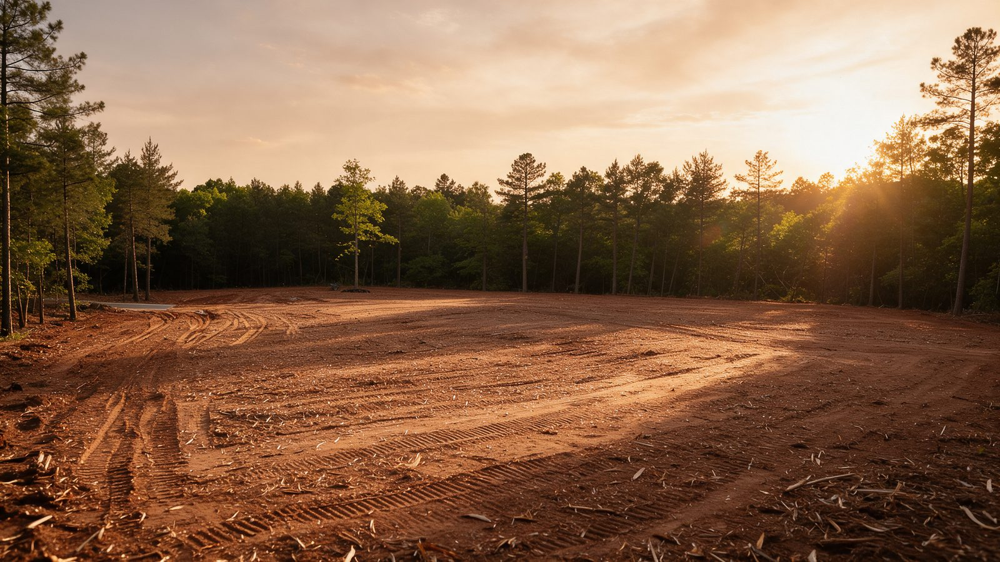

.svc-hero / .svc-form-card
Residential Lot Clearing in Charlotte, NC
You've closed on a lot in Charlotte and the plans are drawn. Now the trees, scrub, and leftover brush have to come off the part where the house, driveway, and yard will go, without taking the oaks you paid a premium for or giving the neighbors a reason to call the city.
We clear single residential lots, most under an acre, from older in-town streets to wooded parcels in newer subdivisions. You get the building envelope opened up exactly where your builder needs it, and a lot that's ready for the next crew.
- Footprint cleared to your plans
- Keeper trees flagged first
- Builder-ready hand-off
Get a Free Lot Clearing Estimate
Send us the lot address and your plans if you have them. We'll call within one business day to set up a walk-through.
Thanks, we've got it.
We'll look up the lot, review anything you sent, and call within one business day to schedule a time to walk it with you.
.svc-trust- Owner on Every JobHe walks your lot and runs the machine
- Licensed & InsuredCOI sent to your builder or HOA
- Free On-Site EstimatesClearing limits marked with you
- Builder-Ready LotsCleared to the footprint, nothing more
.svc-steps.svc-steps--compactWhat Our Residential Lot Clearing Process Is
A residential lot leaves little room for error. These four steps keep the clearing inside your plans and the rest of the lot untouched.
-
01
Read the Plans
We look at your plot plan or house plans together and agree on the envelope: footprint, driveway, yard, and working room.
-
02
Mark the Limits
Clearing limits and keeper trees are flagged on the ground so you, your builder, and the neighbors can see the plan.
-
03
Clear the Envelope
Compact tracked equipment takes down trees and brush inside the limits and stays off the root zones outside them.
-
04
Walk It With Your Builder
We confirm the lot matches the plan so framing, grading, or utility crews can start without redoing anything.
.svc-area-cardWhere We Serve for Residential Lot Clearing
We clear residential lots across every Charlotte neighborhood and in the towns below. Those town pages are on the way, so the main land clearing page is the best place to start for the full overview.
.svc-split / .svc-figure / .svc-calloutClearing a Single Residential Lot in Charlotte
Infill and Teardown Lots Inside the City
A lot of Charlotte's new homes go up on in-town parcels in places like Cotswold, Sedgefield, Oakhurst, Plaza Midwood, and Madison Park. Some are vacant lots that grew up in volunteer trees over the decades. Others sit right beside a teardown, or the lot was split and the back half is still woods. These jobs come with fences on three sides, power and cable lines overhead, and a mature canopy shared with the neighbors. We plan every cut around those things before the machine is unloaded, so limbs come down where they should and nothing lands on a fence, a roof, or a parked car.
Wooded Lots in Newer Subdivisions
In growing parts of the city like Steele Creek, the Ballantyne area, and out toward University City, many buyers pick a lot because it backs up to woods. The developer often left those lots heavily treed, so the owner or builder has to open up just enough room for the house. The goal on these lots is usually the opposite of a blank slate: clear the front and the house site, then keep a deep stand of trees behind the house for shade and privacy.
Clear the Building Envelope, Leave the Rest
The building envelope is the area the house, driveway, and a working margin around them actually need. Clearing past it costs you money twice: once to remove trees you didn't have to lose, and again for landscaping to replace the shade and screening. We clear to the envelope on your plans, add the working room your builder needs for excavators and material drops, and stop there.
Tight Access and Close Neighbors
Many in-town lots have one way in: a narrow frontage between two houses or a single curb cut. We bring compact tracked equipment sized for the opening, lay down protection where we cross a sidewalk or a shared drive, and keep the street clean at the end of each day. We also give neighbors a heads-up when we're working near their side of the line.
HOA Review and City Rules
If your lot is in a neighborhood with an HOA, the architectural review committee may want to approve the clearing limits and the trees coming down before work starts. We'll mark everything on the ground so you can photograph it for the submittal. On the city side, Charlotte's tree ordinance applies mainly to commercial and new development, and any tree in the public right-of-way along the street belongs to the city. Most single lots fall under the one-acre threshold that triggers a state erosion and sedimentation control plan, but larger or steeper parcels may not. Confirm what applies to your lot with the city or county before we start.
What We Hand Off, and to Whom
We don't do grading. Our job ends with a cleared envelope that's ready for the builder or grading contractor to shape. Stumps inside the footprint can be ground or pulled as part of the scope, depending on what your builder wants under the foundation, and limbs and small material are mulched or hauled based on what the next crew needs.


Have a lot and a set of plans?
Send us the address. We'll walk it with you, mark the envelope, and give you a firm written price.
Plan My Lot Clearing.svc-group / .svc-chipOther Services We Provide in Charlotte
Residential lot clearing is one of the land clearing services we offer in Charlotte. Here's everything else we do, grouped by category.
.svc-reasonsWhy Charlotte Homeowners and Builders Choose Us for Lot Clearing
Cleared to the Plan
We clear the footprint, the drive, and the working room on your plans. We don't clear the whole lot just because it's faster.
Your Best Trees Stay
Keepers are flagged before we start and machines stay off their roots, so they're still healthy after the house is built.
Ready for the Next Crew
The lot is handed off clean and to scope, so your builder or grading contractor starts on schedule.
Neighbor-Friendly
Compact equipment, a clean street, and a heads-up to the folks next door before we work near their line.
Clearing one residential lot is a small job with big consequences. A single misplaced cut can cost you a hundred-year oak or a neighbor's goodwill. We treat your lot like the start of your home, not just another clearing job, and leave it the way your builder hoped to find it.
.svc-faq__itemCharlotte Residential Lot Clearing FAQs
How much of my lot do I need to clear to build a house?
Only the building envelope: the house footprint, the driveway, and enough working room around them for excavators, concrete trucks, and material deliveries. Your builder can tell you how much margin they want, and we'll clear to that line.
Do you grade the lot too?
No. We clear the lot and hand it off. Grading and final shaping are done by your builder or a grading contractor, and we'll leave the site ready for them.
What happens to the stumps on my lot?
Stumps under the house footprint and driveway are usually ground or pulled so they don't cause problems later. Stumps outside the envelope can often be cut low and left. We'll set this in your written scope based on what your builder wants.
Can you clear a lot that's squeezed between two houses?
Yes. Tight infill lots are common in Charlotte. We use compact tracked machines, protect any shared drive or sidewalk we cross, and plan every tree drop around fences, roofs, and lines.
Do I need my HOA's approval before clearing?
If your neighborhood has an HOA, very likely. Most want to see the clearing limits and which trees are coming down. We'll mark everything on site so you have a clear plan to submit.
Does the city need to approve clearing my residential lot?
Charlotte's tree ordinance applies mainly to commercial and new development, and trees in the public right-of-way belong to the city. Lots over an acre generally need an erosion control plan. Confirm the rules for your parcel with the city or county before work begins.
How long does it take to clear a typical residential lot?
Most single lots take one to three days on site, depending on tree size, density, and access. Scheduling usually takes a week or two from approval, and we'll work toward your builder's start date.
I bought a lot next to a teardown. Can you clear both at once?
Yes, as long as the demolition contractor has finished or we coordinate around their schedule. Clearing both parcels in one mobilization often saves time and keeps the neighbors from dealing with two separate disruptions.
.svc-ctaReady to clear your Charlotte property?
Free on-site walk-through and a firm written price.